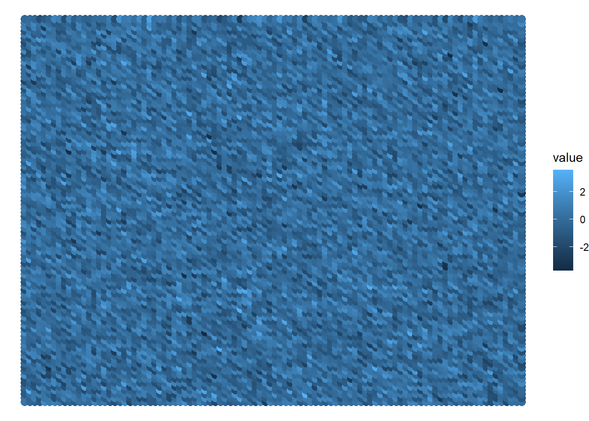

In this chapter, we will study more about how to produce chaos with randomness. We will learn about the different styles of randomness that are available in R, and we will also learn about producing randomness in one and two dimensional spaces.
Generative art is mostly a synergy between chaos and order. A big part of it comes from combining random patterns we find in nature with the order and logic of math. In other words, we use geometry and a lot of math to draw and mold shapes in the screen, and we combine that with randomness to achieve random patterns that are interesting to look at.
However, chaos is a hard topic in general for us, programmers. Because our job is the complete opposite of chaos. We work with logic, precision, and computers. Chaos and randomness is not a part of our essence.
Furthermore, computers are, essentially, precision machines. As a result, it seems very wrong and unlikely to use them to produce chaos. But you can achieve that, if you want to, by asking the computer to produce random values, and using these random values as factors to produce the chaos you want.
3.1 The different styles of randomness
We have different generators of random values available in R. Each generator produces random values following a specific rule or target. And as a consequence of that, the randomness that each generator produces will be slightly different from the others.
In base R, there at least three generators that you must known:
runif() produces random values that follow a uniform distribution;
rnorm() produces random values that follow a normal distribution;
sample() produces a random sample from a set of values;
The functions runif() and rnorm() can be used to generate random numbers, and the function sample() can be used when you are trying to select a random sample from a known set of values. To some extent, you can say that sample() is used whenever you want to randomly select a value (or select a random sample of values) from a known set of values.
There are other generators available in R that might be very useful, specially trough the ambient R package1, which is a R interface to the FastNoise C++ library.
This ambient package offers other two generators that are very important to us, which are:
ambient::noise_perlin(): produces random values using the Perlin Noise algorithm.
ambient::noise_simplex(): produces random values using the Simplex Noise algorithm.
3.2 Two dimensional randomness
3.2.1 The true randomness of runif()
library(ggplot2)
Warning: package 'ggplot2' was built under R version 4.3.2
n <-100set.seed(40)random <-matrix(runif(n ^2), n, n)d <-data.frame(col_id =rep(seq_len(n), each = n),row_id =rep(seq_len(n), times = n),value = random |>as.vector())ggplot(d) +geom_point(aes(x = col_id, y = row_id, color = value),size =3 ) +theme_void()
When we use rnorm(), it still produces a pretty random result. However, we can see that the colors are more flat, they seem less random compared to runif(). What is happening is that rnorm() outputs random values based on a probabilistic distribution, or more specifically, based on a mean value.
The end result of this, is that rnorm() tend to output values that are closer to the mean of the probabilistic distribution. In the case below, the mean value of the distribution is zero. So, the colors in the image below seen more flat, because the majority of the values sorted by rnorm() are values that are very close to zero.
Hence, what you see in the image below is still a collection of many random values. But a big chunk of these random values are values that are very close to zero. That is why most of the points in this image are in the middle of the black and blue gradient scale.
set.seed(40)random <-matrix(rnorm(n ^2), n, n)d <-data.frame(col_id =rep(seq_len(n), each = n),row_id =rep(seq_len(n), times = n),value = random |>as.vector())ggplot(d) +geom_point(aes(x = col_id, y = row_id, color = value),size =3 ) +theme_void()

library(ambient)
Warning: package 'ambient' was built under R version 4.3.2
random <-noise_perlin(c(n, n))d <-data.frame(col_id =rep(seq_len(n), each = n),row_id =rep(seq_len(n), times = n),value = random |>as.vector())ggplot(d) +geom_point(aes(x = col_id, y = row_id, color = value),size =3 ) +theme_void()